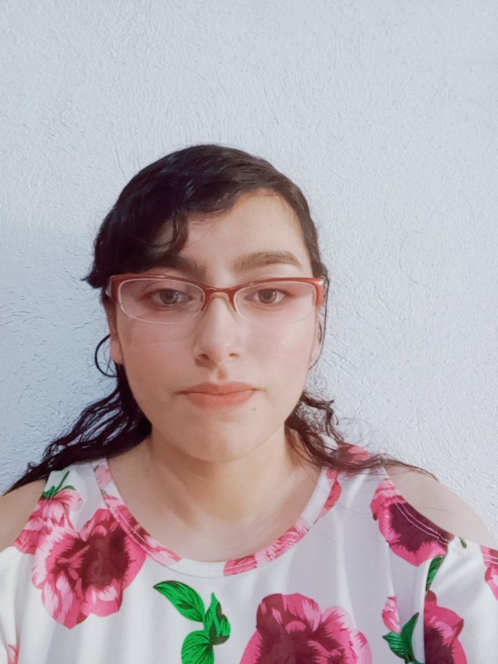

Rocio Guisell López Espinoza
Profesión: Ingeniería En Sistemas De Información Y Ciencias De La Computación
Breve Biografía
Soy estudiante de Ingeniería en Sistemas en la Universidad Mariano Gálvez de Guatemala, actualmente cursando el octavo semestre. Me interesa el área de tecnología, desarrollo de software y administración de bases de datos. Poseo conocimientos en programación, desarrollo web, diseño de sistemas, redes y herramientas tecnológicas. Me considero una persona responsable, con disposición para aprender y mejorar constantemente.
Edad: 25 años
Datos de Contacto
Teléfono: +502 51675691
Email: rlopeze13@miumg.edu.gt